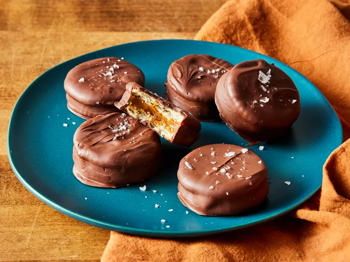

Home
Salted Caramel Ritz Cookies

Ritz cookies are the base for these no-bake salted caramel ritz cookies.
The sweetness of dulce de leche and chocolate provides a wonderful
contrast to the salty, buttery crackers.
Ingredients
- 60 round buttery crackers (such as Ritz®)
- 1 cup canned dulce de leche
- 1 ½ cups dark chocolate chips
- 1 ½ cups dark chocolate melting wafers
- flaky sea salt (optional)
Makes 30 cookies
Directions
- Gather all ingredients.
-
Arrange half of the crackers, bottom sides up, on a parchment-lined
baking sheet.
-
Spoon a rounded teaspoon of dulce de leche on the center of each
cracker.
-
Top with remaining crackers, top sides up. Place baking sheet in the
refrigerator and chill cracker cookies until firm, at least 30 minutes.
-
Melt chocolate chips and melting wafers in the top of a double boiler
over medium heat, stirring occasionally, until smooth, about 5 minutes.
-
Dip chilled cracker cookies into melted chocolate using a fork until
fully coated, allowing excess chocolate to drip back into the bowl.
-
Return cookies to prepared baking sheet. If desired, sprinkle lightly
with flaky sea salt.
-
Chill coated cookies in the refrigerator until chocolate is set, about
15 minutes. Store cookies in the refrigerator.
- Enjoy!